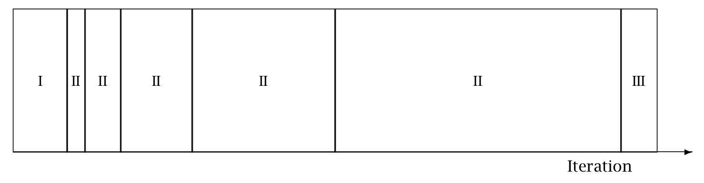

MCMC Sampling using Hamiltonian Monte Carlo
The sample method provides Bayesian inference over the model conditioned on data using Hamiltonian Monte Carlo (HMC) sampling. By default, the inference engine used is the No-U-Turn sampler (NUTS), an adaptive form of Hamiltonian Monte Carlo sampling. For details on HMC and NUTS, see the Stan Reference Manual chapter on MCMC Sampling.
The full set of configuration options available for the sample method is reported at the beginning of the sampler output file as CSV comments. When the example model bernoulli.stan is run via the command line with all default arguments, the resulting Stan CSV file header comments show the complete set of default sample method configuration options:
# method = sample (Default)
# sample
# num_samples = 1000 (Default)
# num_warmup = 1000 (Default)
# save_warmup = 0 (Default)
# thin = 1 (Default)
# adapt
# engaged = 1 (Default)
# gamma = 0.050000 (Default)
# delta = 0.800000 (Default)
# kappa = 0.750000 (Default)
# t0 = 10.000000 (Default)
# init_buffer = 75 (Default)
# term_buffer = 50 (Default)
# window = 25 (Default)
# save_metric = 0 (Default)
# algorithm = hmc (Default)
# hmc
# engine = nuts (Default)
# nuts
# max_depth = 10 (Default)
# metric = diag_e (Default)
# metric_file = (Default)
# stepsize = 1.000000 (Default)
# stepsize_jitter = 0.000000 (Default)
# num_chains = 1 (Default)Iterations
At every sampler iteration, the sampler returns a set of estimates for all parameters and quantities of interest in the model. During warmup, the NUTS algorithm adjusts the HMC algorithm parameters metric and stepsize in order to efficiently sample from typical set, the neighborhood substantial posterior probability mass through which the Markov chain will travel in equilibrium. After warmup, the fixed metric and stepsize are used to produce a set of draws.
The following keyword-value arguments control the total number of iterations:
num_samplesnum_warmupsave_warmupthin
The values for arguments num_samples and num_warmup must be a non-negative integer. The default value for both is \(1000\).
For well-specified models and data, the sampler may converge faster and this many warmup iterations may be overkill. Conversely, complex models which have difficult posterior geometries may require more warmup iterations in order to arrive at good values for the step size and metric.
The number of sampling iterations to runs depends on the effective sample size (EFF) reported for each parameter and the desired precision of your estimates. An EFF of at least 100 is required to make a viable estimate. The precision of your estimate is \(\sqrt{N}\); therefore every additional decimal place of accuracy increases this by a factor of 10.
Argument save_warmup takes values \(0\) or \(1\), corresponding to False and True respectively. The default value is \(0\), i.e., warmup draws are not saved to the output file. When the value is \(1\), the warmup draws are written to the CSV output file directly after the CSV header line.
Argument thin controls the number of draws from the posterior written to the output file. Some users familiar with older approaches to MCMC sampling might be used to thinning to eliminate an expected autocorrelation in the samples. HMC is not nearly as susceptible to this autocorrelation problem and thus thinning is generally not required nor advised, as HMC can produce anticorrelated draws, which increase the effective sample size beyond the number of draws from the posterior. Thinning should only be used in circumstances where storage of the samples is limited and/or RAM for later processing the samples is limited.
The value of argument thin must be a positive integer. When thin is set to value \(N\), every \(N^{th}\) iteration is written to the output file. Should the value of thin exceed the specified number of iterations, the first iteration is saved to the output. This is because the iteration counter starts from zero and whenever the counter modulo the value of thin equals zero, the iteration is saved to the output file. Since zero modulo any positive integer is zero, the first iteration is always saved. When num_sampling=M and thin=N, the number of iterations written to the output CSV file will be ceiling(M/N). If save_warmup=1, thinning is applied to the warmup iterations as well.
Adaptation
The adapt keyword is used to specify non-default options for the sampler adaptation schedule and settings.
Adaptation can be turned off by setting sub-argument engaged to value \(0\). If engaged=0, no adaptation will be done, and all other adaptation sub-arguments will be ignored. Since the default argument is engaged=1, this keyword-value pair can be omitted from the command.
There are two sets of adaptation sub-arguments: step size optimization parameters and the warmup schedule. These are described in detail in the Reference Manual section Automatic Parameter Tuning.
The boolean sub-argument save_metric was added in Stan version 2.34. When save_metric=1 (true), the adapted stepsize and metric are output as JSON at the end of adaptation. The saved metric file name is the output file basename with the suffix _metric.json, e.g., if using the default output filename output.csv, the saved metric file will be output_metric.json. This metric file can be reused in subsequent sampler runs as the initial metric, via sampler argument metric_file.
Step size optimization configuration
The Stan User’s Guide section on model conditioning and curvature provides a discussion of adaptation and stepsize issues. The Stan Reference Manual section on HMC algorithm parameters explains the NUTS-HMC adaptation schedule and the tuning parameters for setting the step size.
The following keyword-value arguments control the settings used to optimize the step size:
delta- The target Metropolis acceptance rate. The default value is \(0.8\). Its value must be strictly between \(0\) and \(1\). Increasing the default value forces the algorithm to use smaller step sizes. This can improve sampling efficiency (effective sample size per iteration) at the cost of increased iteration times. Raising the value ofdeltawill also allow some models that would otherwise get stuck to overcome their blockages.
Models with difficult posterior geometries may required increasing thedeltaargument closer to \(1\); we recommend first trying to raise it to \(0.9\) or at most \(0.95\). Values about \(0.95\) are strong indication of bad geometry; the better solution is to change the model geometry through reparameterization which could yield both more efficient and faster sampling.gamma- Adaptation regularization scale. Must be a positive real number, default value is \(0.05\). This is a parameter of the Nesterov dual-averaging algorithm. We recommend always using the default value.kappa- Adaptation relaxation exponent. Must be a positive real number, default value is \(0.75\). This is a parameter of the Nesterov dual-averaging algorithm. We recommend always using the default value.t_0- Adaptation iteration offset. Must be a positive real number, default value is \(10\). This is a parameter of the Nesterov dual-averaging algorithm. We recommend always using the default value.
Warmup schedule configuration
When adaptation is engaged, the warmup schedule is specified by sub-arguments, all of which take positive integers as values:
init_buffer- The number of iterations spent tuning the step size at the outset of adaptation.window- The initial number of iterations devoted to tune the metric, will be doubled successively.term_buffer- The number of iterations used to re-tune the step size once the metric has been tuned.
The specified values may be modified slightly in order to ensure alignment between the warmup schedule and total number of warmup iterations.
The following figure is taken from the Stan Reference Manual, where label “I” correspond to init_buffer, the initial “II” corresponds to window, and the final “III” corresponds to term_buffer:
Warmup Epochs Figure. Adaptation during warmup occurs in three stages: an initial fast adaptation interval (I), a series of expanding slow adaptation intervals (II), and a final fast adaptation interval (III). For HMC, both the fast and slow intervals are used for adapting the step size, while the slow intervals are used for learning the (co)variance necessitated by the metric. Iteration numbering starts at 1 on the left side of the figure and increases to the right.

Algorithm
The algorithm keyword-value pair specifies the algorithm used to generate the sample. There are two possible values: hmc, which generates from an HMC-driven Markov chain; and fixed_param which generates a new sample without changing the state of the Markov chain. The default argument is algorithm=hmc.
Samples from a set of fixed parameters
If a model doesn’t specify any parameters, then argument algorithm=fixed_param is mandatory.
The fixed parameter sampler generates a new sample without changing the current state of the Markov chain. This can be used to write models which generate pseudo-data via calls to RNG functions in the transformed data and generated quantities blocks.
HMC samplers
All HMC algorithms have three parameters:
- step size
- metric
- integration time - the number of steps taken along the Hamiltonian trajectory
See the Stan Reference Manual section on HMC algorithm parameters for further details.
Step size
The HMC algorithm simulates the evolution of a Hamiltonian system. The step size parameter controls the resolution of the sampler. Low step sizes can get HMC samplers unstuck that would otherwise get stuck with higher step sizes.
The following keyword-value arguments control the step size:
stepsize- How far to move each time the Hamiltonian system evolves forward. Must be a positive real number, default value is \(1\).stepsize_jitter- Allows step size to be “jittered” randomly during sampling to avoid any poor interactions with a fixed step size and regions of high curvature. Must be a real value between \(0\) and \(1\). The default value is \(0\). Settingstepsize_jitterto \(1\) causes step sizes to be selected in the range of \(0\) to twice the adapted step size. Jittering below the adapted value will increase the number of steps required and will slow down sampling, while jittering above the adapted value can cause premature rejection due to simulation error in the Hamiltonian dynamics calculation. We strongly recommend always using the default value.
Metric
All HMC implementations in Stan utilize quadratic kinetic energy functions which are specified up to the choice of a symmetric, positive-definite matrix known as a mass matrix or, more formally, a metric Betancourt (2017).
The metric argument specifies the choice of Euclidean HMC implementations:
metric=unitspecifies unit metric (diagonal matrix of ones).metric=diag_especifies a diagonal metric (diagonal matrix with positive diagonal entries). This is the default value.metric=dense_especifies a dense metric (a dense, symmetric positive definite matrix).
By default, the metric is estimated during warmup. However, when metric=diag_e or metric=dense_e, an initial guess for the metric can be specified with the metric_file argument whose value is the filepath to a JSON or Rdump file which contains a single variable inv_metric. For a diag_e metric the inv_metric value must be a vector of positive values, one for each parameter in the system. For a dense_e metric, inv_metric value must be a positive-definite square matrix with number of rows and columns equal to the number of parameters in the model.
The metric_file option can be used with and without adaptation enabled. If adaptation is enabled, the provided metric will be used as the initial guess in the adaptation process. If the initial guess is good, then adaptation should not change it much. If the metric is no good, then the adaptation will override the initial guess.
If adaptation is disabled, both the metric_file and stepsize arguments should be specified.
Integration time
The total integration time is determined by the argument engine which take possible values:
nuts- the No-U-Turn Sampler which dynamically determines the optimal integration time.static- an HMC sampler which uses a user-specified integration time.
The default argument is engine=nuts.
The NUTS sampler generates a proposal by starting at an initial position determined by the parameters drawn in the last iteration. It then evolves the initial system both forwards and backwards in time to form a balanced binary tree. The algorithm is iterative; at each iteration the tree depth is increased by one, doubling the number of leapfrog steps thus effectively doubling the computation time. The algorithm terminates in one of two ways: either the NUTS criterion (i.e., a U-turn in Euclidean space on a subtree) is satisfied for a new subtree or the completed tree; or the depth of the completed tree hits the maximum depth allowed.
When engine=nuts, the subargument max_depth can be used to control the depth of the tree. The default argument is max_depth=10. In the case where a model has a difficult posterior from which to sample, max_depth should be increased to ensure that that the NUTS tree can grow as large as necessary.
When the argument engine=static is specified, the user must specify the integration time via keyword int_time which takes as a value a positive number. The default value is \(2\pi\).
Sampler diagnostic file
The output keyword sub-argument diagnostic_file=<filepath> specifies the location of the auxiliary output file which contains sampler information for each draw, and the gradients on the unconstrained scale and log probabilities for all parameters in the model. By default, no auxiliary output file is produced.
Multiple chains in one executable
As described in the quickstart section on parallelism, the preferred way to run multiple chains is to use the num_chains argument.
This will run multiple chains of MCMC from the same executable, which can save on memory usage due to only needing one copy of the model and data. As noted in the quickstart guide, this will be done in parallel if the model was compiled with STAN_THREADS=true.
The num_chains argument changes the meanings of several other arguments when it is greater than 1 (the default). Many arguments are now interpreted as a “template” which is used for each chain.
For example, when num_chains=2, the argument output file=foo.csv no longer produces a file foo.csv, but instead produces two files, foo_1.csv and foo_2.csv. If you also supply id=5, the files produced will be foo_5.csv and foo_6.csv – id=5 gives the id of the first chain, and the remaining chains are sequential from there.
This also applies to input files, like those used for initialization. For example, if num_chains=3 and init=bar.json will first look for bar_1.json. If it exists, it will use bar_1.json for the first chain, bar_2.json for the second, and so on. If bar_1.json does not exist, it falls back to looking for bar.json, and if it exists, uses the same initial values for each chain. The numbers in these filenames are also based on the id argument, which defaults to 1.
Examples - older parallelism
Note: Many of these examples can be simplified by using the num_chains argument.
The Quickstart Guide MCMC Sampling chapter section on multiple chains also showed how to run multiple chains given a model and data, using the minimal required command line options: the method, the name of the data file, and a chain-specific name for the output file.
This creates multiple copies of the model process which will all load the data.
To run 4 chains in parallel on Mac OS and Linux, the syntax in both bash and zsh is the same:
> for i in {1..4}
do
./bernoulli sample data file=my_model.data.json \
output file=output_${i}.csv &
doneThe backslash (\) indicates a line continuation in Unix. The expression ${i} substitutes in the value of loop index variable i. The ampersand (&) pushes each process into the background which allows the loop to continue without waiting for the current chain to finish.
On Windows the corresponding loop is:
>for /l %i in (1, 1, 4) do start /b bernoulli.exe sample ^
data file=my_model.data.json my_data ^
output file=output_%i.csvThe caret (^) indicates a line continuation in DOS. The expression %i is the loop index.
In the following examples, we focus on just the nested sampler command for Unix.
Running multiple chains with a specified RNG seed
For reproducibility, we specify the same RNG seed across all chains and use the chain id argument to specify the RNG offset.
The RNG seed is specified by random seed=<int> and the offset is specified by id=<loop index>, so the call to the sampler is:
./my_model sample data file=my_model.data.json \
output file=output_${i}.csv \
random seed=12345 id=${i}Changing the default warmup and sampling iterations
The warmup and sampling iteration keyword-value arguments must follow the sample keyword. The call to the sampler which overrides the default warmup and sampling iterations is:
./my_model sample num_warmup=500 num_sampling=500 \
data file=my_model.data.json \
output file=output_${i}.csvSaving warmup draws
To save warmup draws as part of the Stan CSV output file, use the keyword-value argument save_warmup=1. This must be grouped with the other sample keyword sub-arguments.
./my_model sample num_warmup=500 num_sampling=500 save_warmup=1 \
data file=my_model.data.json \
output file=output_${i}.csvInitializing parameters
By default, all parameters are initialized on an unconstrained scale to random draws from a uniform distribution over the range \([{-2}, 2]\). To initialize some or all parameters to good starting points on the constrained scale from a data file in JSON or Rdump format, use the keyword-value argument init=<filepath>:
./my_model sample init=my_param_inits.json data file=my_model.data.json \
output file=output_${i}.csvTo verify that the specified values will be used by the sampler, you can run the sampler with option algorithm=fixed_param, so that the initial values are used to generate the sample. Since this generates a set of identical draws, setting num_warmp=0 and num_samples=1 saves unnecessary iterations. As the output values are also on the constrained scale, the set of reported values will match the set of specified initial values.
For example, if we run the example Bernoulli model with specified initial value for parameter “theta”:
{ "theta" : 0.5 }via command:
./bernoulli sample algorithm=fixed_param num_warmup=0 num_samples=1 \
init=bernoulli.init.json data file=bernoulli.data.jsonThe resulting output CSV file contains a single draw:
lp__,accept_stat__,theta
0,0,0.5
#
# Elapsed Time: 0 seconds (Warm-up)
# 0 seconds (Sampling)
# 0 seconds (Total)
#Specifying the metric and stepsize
An initial estimate for the metric can be specified with the metric_file argument whose value is the filepath to a JSON or Rdump file which contains a variable inv_metric. The metric_file option can be used with and without adaptation enabled.
By default, the metric is estimated during warmup adaptation. If the initial guess is good, then adaptation should not change it much. If the metric is no good, then the adaptation will override the initial guess. For example, the JSON file bernoulli.diag_e.json, contents
{ "inv_metric" : [0.296291] }can be used as the initial metric as follows:
../my_model sample algorithm=hmc metric_file=bernoulli.diag_e.json \
data file=my_model.data.json \
output file=output_${i}.csvIf adaptation is disabled, both the metric_file and stepsize arguments should be specified.
../my_model sample adapt engaged=0 \
algorithm=hmc stepsize=0.9 \
metric_file=bernoulli.diag_e.json \
data file=my_model.data.json \
output file=output_${i}.csvThe resulting output CSV file will contain the following set of comment lines:
# Adaptation terminated
# Step size = 0.9
# Diagonal elements of inverse mass matrix:
# 0.296291As of Stan versione 2.34, the adapted metric can be saved in JSON format, via sub-argument save_metric, described above. This allows for no or minimal adaptation starting from this file. It is still necessary to specify the stepsize argument as well as the metric_file arguments; the former is the value of the stepsize element in the saved metric file, and the later is the metric file path.
Changing the NUTS-HMC adaptation parameters
The keyword-value arguments for these settings are grouped together under the adapt keyword which itself is a sub-argument of the sample keyword.
Models with difficult posterior geometries may required increasing the delta argument closer to \(1\).
./my_model sample adapt delta=0.95 \
data file=my_model.data.json \
output file=output_${i}.csvTo skip adaptation altogether, use the keyword-value argument engaged=0. Disabling adaptation disables both metric and stepsize adaptation, so a stepsize should be provided along with a metric to enable efficient sampling.
../my_model sample adapt engaged=0 \
algorithm=hmc stepsize=0.9 \
metric_file=bernoulli.diag_e.json \
data file=my_model.data.json \
output file=output_${i}.csvEven with adaptation disabled, it is still advisable to run warmup iterations in order to allow the initial parameter values to be adjusted to estimates which fall within the typical set.
To skip warmup altogether requires specifying both num_warmup=0 and adapt engaged=0.
../my_model sample num_warmup=0 adapt engaged=0 \
algorithm=hmc stepsize=0.9 \
metric_file=bernoulli.diag_e.json \
data file=my_model.data.json \
output file=output_${i}.csvIncreasing the tree-depth
Models with difficult posterior geometries may required increasing the max_depth argument from its default value \(10\). This requires specifying a series of keyword-argument pairs:
./my_model sample adapt delta=0.95 \
algorithm=hmc engine=nuts max_depth=15 \
data file=my_model.data.json \
output file=output_${i}.csvCapturing Hamiltonian diagnostics and gradients
The output keyword sub-argument diagnostic_file=<filepath> write the sampler parameters and gradients of all model parameters for each draw to a CSV file:
./my_model sample data file=my_model.data.json \
output file=output_${i}.csv \
diagnostic_file=diagnostics_${i}.csvSuppressing progress updates to the console
The output keyword sub-argument refresh=<int> specifies the number of iterations between progress messages written to the terminal window. The default value is \(100\) iterations. The progress updates look like:
Iteration: 1 / 2000 [ 0%] (Warmup)
Iteration: 100 / 2000 [ 5%] (Warmup)
Iteration: 200 / 2000 [ 10%] (Warmup)
Iteration: 300 / 2000 [ 15%] (Warmup)For simple models which fit quickly, such updates can be annoying; to suppress them altogether, set refresh=0. This only turns off the Iteration: messages; the configuration and timing information are still written to the terminal.
./my_model sample data file=my_model.data.json \
output file=output_${i}.csv \
refresh=0For complicated models which take a long time to fit, setting the refresh rate to a low number, e.g. \(10\) or even \(1\), provides a way to more closely monitor the sampler.
Everything example
The CmdStan argument parser requires keeping sampler config sub-arguments together; interleaving sampler config with the inputs, outputs, inits, RNG seed and chain id config results in an error message such as the following:
./bernoulli sample data file=bernoulli.data.json adapt delta=0.95
adapt is either mistyped or misplaced.
Perhaps you meant one of the following valid configurations?
method=sample sample adapt
method=variational variational adapt
Failed to parse arguments, terminating StanThe following example provides a template for a call to the sampler which specifies input data, initial parameters, initial step-size and metric, adaptation, output, and RNG initialization.
./my_model sample num_warmup=2000 \
init=my_param_inits.json \
adapt delta=0.95 init_buffer=100 \
window=50 term_buffer=100 \
algorithm=hmc engine=nuts max_depth=15 \
metric=dense_e metric_file=my_metric.json \
stepsize=0.6555 \
data file=my_model.data.json \
output file=output_${i}.csv refresh=10 \
random seed=12345 id=${i}The keywords sample, data, output, and random are the top-level argument groups. Within the sample config arguments, the keyword adapt groups the adaptation algorithm parameters and the keyword-value algorithm=hmc groups the NUTS-HMC parameters.
The top-level groups can be freely ordered with respect to one another. The following is also a valid command:
./my_model random seed=12345 id=${i} \
data file=my_model.data.json \
output file=output_${i}.csv refresh=10 \
sample num_warmup=2000 \
init=my_param_inits.json \
algorithm=hmc engine=nuts max_depth=15 \
metric=dense_e metric_file=my_metric.json \
stepsize=0.6555 \
adapt delta=0.95 init_buffer=100 \
window=50 term_buffer=100